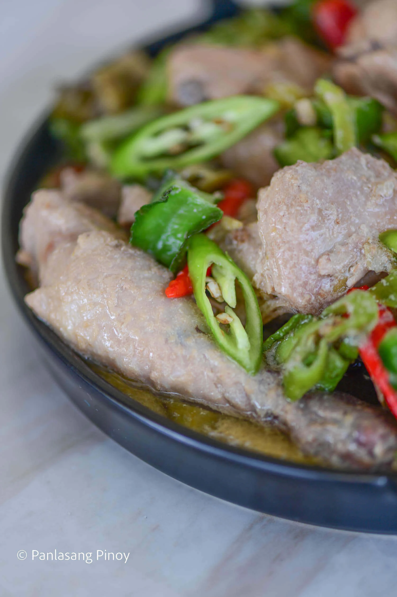

Chicken Gising-Gising

Ingredients
- 2 lbs. chicken cut into serving pieces
- 90 grams Knorr Ginataang Gulay Mix
- ½ lb. winged bean sigarilyas, sliced
- 2 long green chili pepper sliced
- 5 Thai chili pepper optional
- 1 tablespoon shrimp paste
- 3 cups water
- 5 cloves garlic chopped
- 2 thumbs ginger chopped
- 3 tablespoons cooking oil
Instructions
- Heat oil in a pan. Sauté garlic, onion, and ginger.
- Add chicken pieces. Stir fry until the exterior turns light brown in color.
- Add 1 cup water. Let boil.
- Combine Knorr Ginataang Gulay Mix with 2 cups water. Mix well and then pour into the pan. Cover and continue cooking between low to medium heat setting for 20 minutes.
- Add shrimp paste, long green pepper, and winged beans. Cover the pan and continue cooking for 5 minutes.
- Add Thai chili peppers if desired. Cook for 2 minutes more.
- Transfer to a serving bowl. Serve hot with rice.
- Share and enjoy!